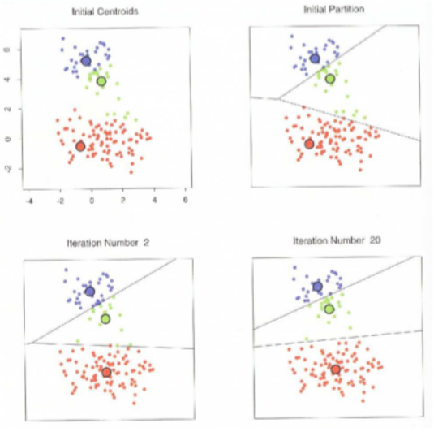
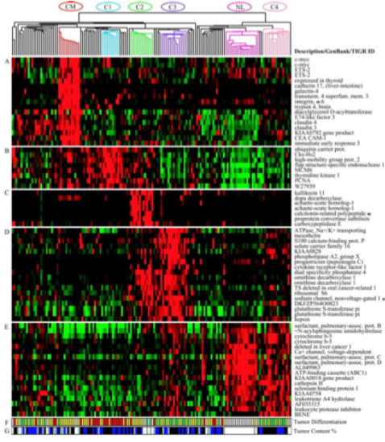
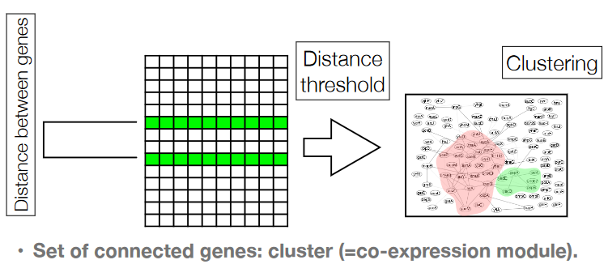
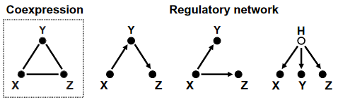
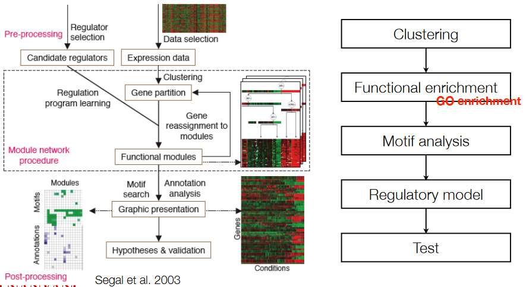

11 Transcriptomes: Network Analysis
In genetics, there’s a fascinating puzzle to solve: how do our genes get turned on and off? Imagine your DNA as a book, and these genes are like chapters. There are two special areas in the DNA that play a big role in this story: promoters (P) and enhancers/silencers (E). Think of them as the “on” and “off” switches for a gene.
Now, here’s where it gets interesting. Proteins, like tiny molecular superheroes called transcription factors (TFs), come into play. These TFs can attach themselves to the promoter and enhancer areas. The magic happens when these proteins team up. The combination of TFs determines whether a gene is going to be “read” and turned into a protein.
If a protein can attach itself to these promoter and enhancer areas, it means it has the power to control that gene. It’s like having control over a remote that decides whether the TV turns on or not. This protein becomes the boss of that gene.
Now, things get a bit more abstract. Scientists talk about how changes in the boss’s mood can affect the story of the gene. If the boss protein gets more or less active, it can make the gene go from quiet to loud or vice versa. It’s like having a dimmer switch for the lights in a room – you can adjust how bright or dim they are.
But here’s the tricky part: in the lab, scientists still need to verify whether a protein can actually attach itself to these promoter and enhancer areas. It’s like having a bunch of keys, but you’re not entirely sure if they fit the locks. This is a crucial step in understanding how our genes are controlled, and scientists are working hard to solve this genetic puzzle.
11.1 Ways of Detecting Gene Function
Forward genetics starts from the phenotype and goes back to the genome. Reverse genetics starts from the genome and works its way back to the phenotype.
11.2 Co-Expression and Co-Expression Networks
In genetics, there’s another interesting concept called co-expression. When scientists don’t know the exact regulatory network, they have to rely on a different approach. They can’t peek inside the genes’ instruction manual, so they start looking for patterns in how genes are turned on or off together, like a team of friends doing the same dance moves.
The idea here is pretty simple. Imagine you’re in a big group of people trying to follow a dance routine. If you and your buddy are close to each other in the group, you’re more likely to do the same dance steps at the same time. In the genetic world, this means that when different experimental conditions are applied, genes that are “close” to each other in the way they’re controlled tend to act in a similar way. We say they “correlate.” These genes also tend to associate with one another during clustering (e.g., K-means clustering).
11.2.1 K-Means Clustering

Imagine you have a big box of colorful marbles, and you want to sort them into different groups based on their colors. K-means is like a handy tool for this job. Here are some key things to know:
Very Common: K-means is a popular method that many people use. It’s like a favorite tool in a craftsman’s toolbox because it’s useful in many situations.
Good for Large Data Sets: If you have a massive collection of marbles (or data), K-means can still do its job efficiently. It’s like having a super-fast sorting machine for your marbles.
Visualization Not Trivial: Sometimes, showing the results of K-means can be a bit tricky. However, if you have a bunch of marbles in many colors, you can represent them on a graph using something called principal components. It’s like making a cool chart that helps you understand how the marbles are grouped.
Fast and Low Memory Consumption: K-means doesn’t hog your computer’s memory, and it works pretty quickly. It’s like having a sorting machine that doesn’t slow down, even when you have lots of marbles to sort.
Let’s take a closer look at some challenges that come with using K-means, a handy tool for grouping things. Here are the key issues:
1. Choosing K: K-means requires us to decide how many groups (K) we want to create. This can be a bit tricky. Thankfully, there are some rules of thumb, like heuristics, to help us decide, but it’s not always easy. Think of it like trying to figure out how many boxes you need to sort your toys into – you don’t want too few or too many.
2. Avoiding Local Minima: When you use K-means, you might end up with different results depending on where you start. It’s like solving a maze where you could get stuck in a corner. To overcome this, you can run the K-means algorithm multiple times and pick the best result. It’s like trying different paths in the maze to find your way out.
3. Message Passing Algorithms: There’s another cool trick – K-means clustering algorithms that use something called “message passing.” This can help find better solutions. It’s like using a secret code or special clues to navigate the maze more effectively. For instance, there’s a method called “affinity propagation” developed by Frey and his team in 2007, which is like having a map to escape the maze.
11.2.2 Hierarchical Clustering
Hierarchical clustering is a way to group things together in a very organized manner, and it works like building a tree from the ground up. Here’s how it goes:
In this approach, we always start by putting the two most similar things together into a new cluster. Imagine you have a bunch of marbles, and you want to organize them by color. You’d begin by pairing the two marbles that look the most alike.
Now, when we’re making these clusters, there are a few ways we can decide which marble represents the whole group:
- We can calculate the average of all the marbles in the cluster, like finding the average color.
- Or, we can pick the marble that looks the most similar to the others in the group.
- Alternatively, we could choose the marble that stands out the most, the one that’s least like the rest.
Here’s where it gets interesting: depending on how we choose this representative and the method we use, we get different results. It’s like if we asked a few people to organize the marbles by color, they might come up with slightly different groups.
11.2.2.1 Pros and Cons with Hierarchical Clustering

Hierarchical clustering is a popular way to organize and show data, like putting things in order. It’s so commonly used because it’s not just about sorting data; it’s also a fundamental tool for creating visual representations. Think of it as arranging your toys neatly on a shelf.
One cool thing about hierarchical clustering is that it can be used in a two-way fashion. It doesn’t just sort one type of thing; it can sort both experiments and genes. It’s like having a special shelf where you not only arrange your toys but also group your books together.
But here’s the catch: while hierarchical clustering is super handy, it works best when you’re dealing with small amounts of data. If you have a massive collection of things to organize, it might not be the best choice. It’s like trying to fit too many toys on a tiny shelf – it gets a bit crowded. So, when you’ve got a smaller pile to sort, hierarchical clustering is your go-to tool for tidying things up and creating visual displays.
But there’s a challenge with this approach: how do we decide when to stop making clusters? We have a tree of clusters, but we need to know where to cut it. It’s like having a tree with many branches and trying to figure out where to make the final cuts to create the groups we want. That’s the tricky part in hierarchical clustering.
11.2.3 Interpreting Co-Expression Networks
When it comes to co-expression clusters, understanding what they mean can be like solving a puzzle. One way to look at it is through the *Guilt by Association principle. This means that if genes are co-expressed, they might be working together or at least involved in similar processes. It’s a bit like assuming that if you often see two friends together, they might be doing something fun or related, like playing the same video game.
Now, if genes are co-expressed, it’s like they’re on the same team. They might be working together in the same biological pathway. Think of this as a group of friends joining forces to win a game or solve a big problem together.

To understand co-expression clusters (i.e., related genes) better, we can also check for gene ontology enrichments. This is like checking if our group of friends shares common interests. It helps us figure out what kind of activities they enjoy together.
Another thing to consider is tissue/condition specificity. It’s like looking at when and where our friends like to hang out the most. In this case, we examine the experiments where the cluster’s gene expression is at its peak, which can tell us where these genes are most active.
Sometimes, we might also discover that co-expression clusters have something in common. This can be because they share enriched promoter motifs, which are like special symbols that tell us they belong to the same club. Additionally, if you find “transcription factors” in the same cluster, it’s like identifying key players or leaders in the group. These are the friends who organize the activities or call the shots in their little club of co-expressed genes.
11.2.3.1 Problems with Networks
Exploring co-expression networks can be a bit like hunting for hidden treasures, but there are some challenges we need to tackle along the way. Here are some of the issues we encounter:
First, the data can be noisy. This means there are lots of false alarms or “false positives.” It’s like searching for secret clues, but sometimes you find things that aren’t really connected to your treasure hunt. To deal with this, scientists use clever tricks like bootstrapping, randomization, or cross-validation. These methods help them estimate how often these false alarms happen and make their results more reliable.
Another tricky thing is that co-expression networks can’t always tell us if the connection between genes is a direct one or if it’s indirect. It’s like figuring out if your friend’s friend is your friend too, or if they’re just a friendly acquaintance. This direct or indirect link can make a big difference in understanding how genes work together.

So, how do we uncover the secret codes that reveal the regulatory structure, like who’s in charge or who’s following whom? Well, scientists have a couple of strategies. In the “wet lab,” they carry out experiments by making changes, like knocking out a gene, to see how it affects the others. It’s like doing experiments in a chemistry lab to see what happens when you mix different ingredients.
Alternatively, they use more advanced statistical models to find these hidden connections. Think of it as using a super detective’s magnifying glass to spot the subtle clues in the data. By overcoming these challenges, we can unlock the mysteries of co-expression networks and understand how genes influence each other.
11.2.3.2 Extra Information
When it comes to understanding genes and how they work, having some extra pieces of information can be incredibly helpful. Here are a few key things that come in handy:
1. Identity of Transcription Factors and Their Binding Motifs: Imagine transcription factors as the directors of the genetic orchestra. They control which genes play their music. Knowing which transcription factors are in action and what kind of musical notes (or binding motifs) they follow helps us understand how genes are orchestrated.
2. Knowledge About Functional and Structural Similarity of Genes: Genes are like puzzle pieces in a big genetic puzzle. If we know which pieces fit together because of their shape or function, it makes solving the puzzle easier. Understanding the similarities between genes – whether they perform similar functions or have similar structures – can reveal a lot about how they interact.
3. Sequence and Binding Sites in the Promoter: Genes have specific “instructions” in their promoter regions that help control when and how they are activated. Knowing these sequences and binding sites is like having the blueprint for building a particular gadget. It tells us how the gene functions and what can influence it.
4. Measurements About Protein-DNA Binding: Proteins, like transcription factors, often team up with DNA to make things happen. By measuring these protein-DNA interactions, it’s like capturing the moments when the genetic actors step onto the stage. This helps us understand who’s taking part in the genetic play and how they’re influencing the script.
11.2.4 Possible Workflow

11.2.5 Advanced Models for Gene Regulation
In the fascinating world of gene regulation, there are some advanced models that scientists use to understand how genes are controlled. These models are like powerful tools in their toolkit. Here are a few of them:
Graphical Gaussian Models: Think of these models as building a web of connections. Scientists create this web by testing how genes are related and whether they depend on each other. It’s like drawing lines between friends who influence each other in some way.
Regression-Based Models: These models are a bit like fortune-tellers. They try to predict a gene’s behavior by looking at other factors, like the expression of regulators or how often certain binding sites appear. It’s as if they’re reading the signs and signals to predict what the gene will do next.
Bayes Nets, Network Models, Data Fusion Methods: These are like building a grand map of gene interactions. Bayes nets are like road signs that show us the most likely paths genes will take. Network models are like a city’s layout, helping us understand how genes connect. Data fusion methods combine information from different sources, like puzzle pieces, to create a clearer picture.
More Advanced (Probabilistic) Models: These models are like master chefs who mix various ingredients to create a unique dish. They combine ideas from the models above and add even more background information. This helps scientists create a comprehensive understanding of gene regulation.
All these models are tools that help scientists explore the intricate world of gene regulation, unraveling the complex relationships between genes and their controllers. It’s like being a detective, using different methods to solve the mystery of how our genes work and influence our lives.